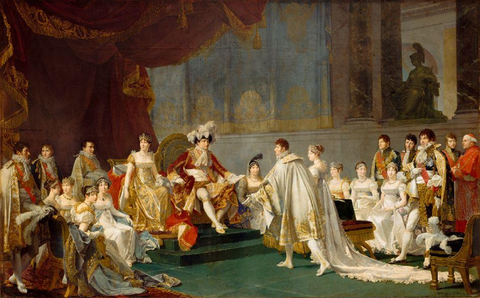
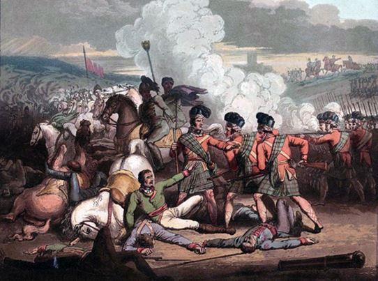
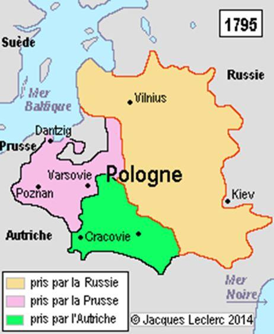
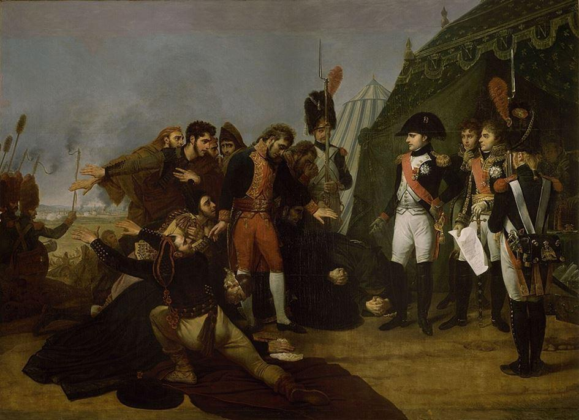
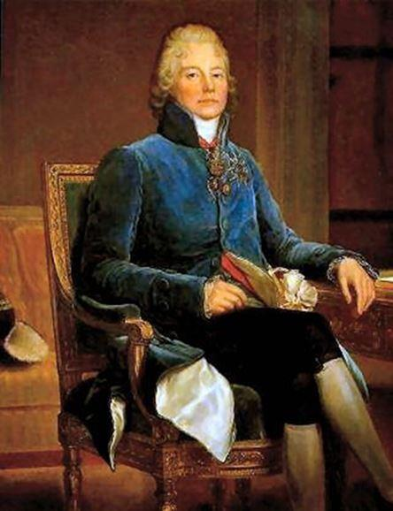
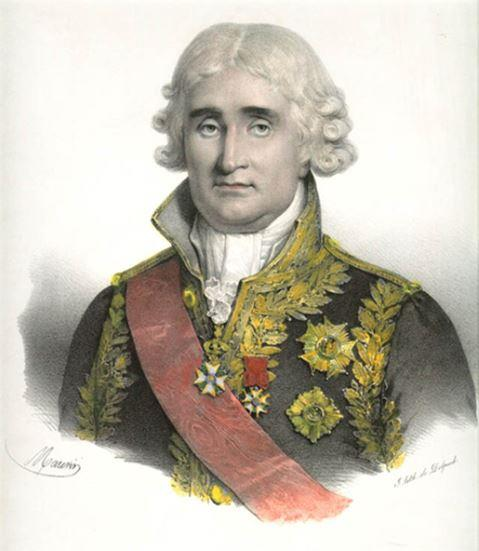
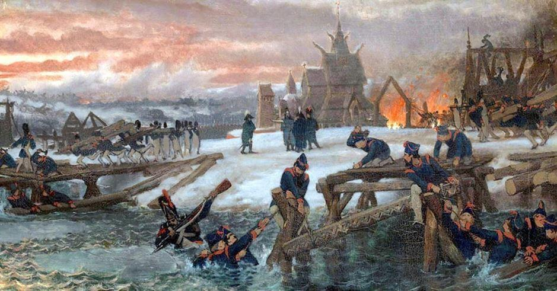
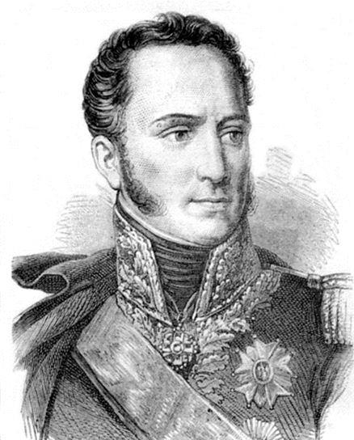

En 1811, Napoléon est à son apogée. Il vient d’avoir un fils, titré roi de Rome, que lui a donné sa seconde épouse, Marie-Louise, fille de l’Empereur d’Autriche. Il est à la fois Empereur des Français, roi d’Italie, médiateur de la confédération helvétique et protecteur de la confédération du Rhin. Son frère Joseph est roi d’Espagne. Son beau-frère le maréchal Murat est roi de Naples. Son autre frère Jérôme règne sur la Westphalie. L’ensemble de l’Europe est composé soit de royaumes vassalisés (Bavière, Wurtemberg, Naples, Espagne, Duché de Varsovie, Westphalie…), soit d’alliés, plus ou moins contraints (Russie, Autriche, Prusse…). De l’Atlantique au Niémen, le continent est sous influence française.
L’Autriche a été vaincue en 1805 (Ulm, Austerlitz) puis en 1809 (Eckmühl, Essling, Wagram). La Prusse a été battue durant la campagne éclair de 1806 (Iéna, Auerstaedt). Enfin, la Russie a perdu en 1805 (Austerlitz) puis en 1807 (Eylau, Friedland). Seule la Grande-Bretagne résiste encore aux Français. L’idée d’un débarquement ayant été abandonnée, seule une asphyxie économique pourrait éventuellement mettre fin aux guerres qui déchirent les nations depuis vingt ans. Mais pour cela, il faut que le blocus continental décrété en 1806 soit respecté par tous.
Afin de parfaire ce système du blocus continental, Napoléon, de concert avec l’Espagne, envahit le Portugal en 1807. La fermeture des ports ibériques aux navires britanniques stoppe les exportations de marchandises en provenance d’Angleterre, impactant l’économie de notre dernier adversaire. Cependant, la guérilla espagnole, animée par les religieux, mène la vie dure aux meilleures troupes françaises.
Sur le reste du continent, la paix est assurée depuis 1807 par l’alliance entre la France et la Russie. L’union entre les deux Empires est un gage de stabilité. Peu de temps après avoir vaincu les Russes à Friedland (14 juin 1807), Napoléon a souhaité s’entendre avec son puissant ennemi. Le traité de Tilsit ménage le tsar Alexandre au détriment des Prussiens. La Russie n’y perd que quelques territoires (les îles Ioniennes et les bouches de Cattaro) alors que le royaume de Westphalie et le Duché de Varsovie rassemblent les terres prises à la Prusse.
Surtout, la Russie accepte de devenir l’alliée de Napoléon et même d’intervenir auprès de Londres pour que la paix s’installe. Si la Grande-Bretagne refusait de se soumettre, Alexandre devait accepter d’entrer dans la coalition et adhérer au blocus continental en fermant ses ports aux marchandises britanniques. En échange, la France se proposait de servir de médiateur entre la Russie et l’Empire Ottoman et, en cas d’échec, d’entrer dans une entente militaire contre Constantinople. Le traité de Tilsit ne prévoyait-il pas que les deux empires acceptaient de « s’engager à faire cause commune soit par terre, soit par mer, soit par terre et par mer, dans toute guerre que la France et la Russie seraient dans la nécessité d’entreprendre ou de soutenir contre toute puissance européenne » ?
Néanmoins, beaucoup de points de discordes vont, peu à peu naître et se développer entre les deux superpuissances continentales. Certes, le blocus est indispensable à Napoléon mais cette politique exige de contrôler toutes les côtes européennes sans exception. Pour empêcher l’importation de produits anglais, il faut surveiller les ports et interdire les débarquements clandestins. Or, si le tsar a, au début, appliqué le blocus avec soin, il se doit aussi de veiller à ce que celui-ci ne perturbe pas trop son économie. Car la Russie manque cruellement de café, de sucre, de textile, d’épices qui jusqu’en 1807, provenaient des îles britanniques en échange du blé des plaines russes. Le blocus fait donc souffrir les négociants, industriels et agriculteurs mais aussi la population. Progressivement donc, des brèches se créent dans le système. Des navires neutres (américains notamment) débarquent sur la Baltique des produits venant indirectement de Grande-Bretagne. Le 31 décembre 1810, le tsar change même de politique économique en imposant une forte taxation des marchandises françaises et notamment des produits de luxe. C’est un renversement d’alliance préjudiciable à la guerre économique voulue par Napoléon.
À elle seule, cette raison expliquerait presque entièrement la campagne de 1812. Il ne saurait y avoir de place pour deux Titans sur le continent européen. Napoléon préférerait rester en paix avec la Russie. Mais, Alexandre, déjà d’esprit mystique, considère désormais que le partage ne s’est réalisé qu’au bénéfice de la France. Pour disposer d’un poids considérable, il lui faut affronter son principal adversaire. Quitte, pour cela, à s’allier à la Grande-Bretagne.
C’est aussi, qu’outre la question du blocus continental, d’autres points de désaccord se multiplient entre les deux géants de l’Europe.
La Pologne a depuis longtemps été partagée, déchirée entre ses trois puissants voisins immédiats, l’Autriche, la Prusse et la Russie. Or, Napoléon entend aider les Polonais dans leur libération voire dans la recherche de leur unité perdue. Dès 1807, la nation polonaise renaît avec la création du duché de Varsovie, dirigée nominalement par le roi de Saxe mais où Napoléon exerce une réelle prépondérance.
Le territoire s’est accru en 1809 avec la prise sur les Autrichiens de la Galicie occidentale. Les Polonais, le général Poniatowski en tête, rêvent de voir renaître une grande Pologne qui pourrait inclure des terres historiquement et sociologiquement polonaises comme la Russie blanche, la Lituanie…
L’Empereur des Français n’a qu’à se louer des Polonais qui en nombre, désirent le servir et combattre au sein de la Grande Armée. A terme, la renaissance d’une nation polonaise, grande, forte, souveraine, ne peut qu’avantager la France qui disposerait alors d’un pays allié formant les marches de l’Empire sur l’Est et permettant de contenir une éventuelle avancée de troupes russes. Or, la Russie peut s’inquiéter de cette perspective puisque l’agrandissement de la Pologne se fera désormais à son détriment. Napoléon sera toujours déterminé sur les questions polonaises. « Quand mêmes vos armées camperaient sur les hauteurs de Montmartre, je ne céderai un pouce du territoire varsovien » affirmait-il à l’ambassadeur du tsar à Paris en 1810.
Les affaires orientales vont vite aussi révéler une certaine incompréhension entre les deux souverains. Peu après Tilsit, Napoléon avait écrit au tsar afin de lui proposer une action commune contre l’Empire Ottoman. Les Français venus de Dalmatie et les Russes, ensemble, pourraient sans peine anéantir la suprématie turque. Les Français y voient surtout un moyen de contrer les Anglais, éventuellement en menaçant leurs possessions aux Indes. Immédiatement, Alexandre s’approprie le projet. Il se voit déjà conquérant. Déjà, il rêve au partage de l’Empire Ottoman, prenant la Bulgarie, la Moldavie et la Valachie, donnant (ou laissant) des territoires à son allié français, l’Égypte, la Syrie, l’Albanie, la Crête, la Morée, offrant la Croatie voire la Bosnie à l’Autriche… Reste le problème crucial de Constantinople. Le tsar revendique la ville qui lui permet un débouché sur la Méditerranée. La France ne souhaitant pas que la Russie contrôle la région des détroits, l’affaire en reste là. La Russie affronte donc seule les Turcs, considérant que Napoléon a manqué à sa parole. L’attentisme en Orient est d’autant plus urgent qu’en 1808, ce qui préoccupe Napoléon ne se situe plus à l’Est mais au Sud. Les guerres dans la péninsule ibérique s’annoncent plus ardues que prévu. La France ne peut se permettre d’ouvrir un deuxième front alors que l’armée française est en difficulté en Espagne et au Portugal. Les troupes stationnées en Prusse ou en Pologne, de même que les nouvelles recrues, sont dirigées vers les Pyrénées. Il n’est plus question de conflit contre les Ottomans. Sur cette question, les Russes observent avec peine que l’allié français se dérobe.
L’entrevue d’Erfurt entre les deux Empereurs peine à renouer avec l’ambiance de Tilsit. Certes, le « parterre de rois » fait illusion et rappelle que le vieux continent reste dominé par la France et la Russie. Mais l’idylle entre Napoléon et Alexandre semble s’être émoussée. Que le tsar se lève et serre la main de Napoléon au moment où Talma prononce le vers de Voltaire, « L’amitié d’un grand homme est un bienfait des Dieux » soit un symbole, nul n’en doute. Mais sur le fond, la situation a changé. A Tilsit, les deux partenaires étaient sur des niveaux inégaux. Napoléon venait de vaincre les Russes et le tsar pouvait apparaître comme suppliant. À Erfurt, c’est Napoléon qui a besoin de son allié pour surveiller l’Europe pendant qu’il achève (du moins le croit-il) la guerre dans la péninsule ibérique. Loin d’être naïf, le tsar comprend qu’il est en position de force. Surtout, la trahison de Talleyrand lui indique déjà le chemin à suivre. L’ancien ministre des relations extérieures a un entretien secret avec Alexandre :
 Charles-Maurice de Talleyrand« Sire, que venez-vous faire ici ? C’est à vous de sauver l’Europe et vous n’y parviendrez qu’en tenant tête à Napoléon. Le peuple français est civilisé ; son souverain ne l’est pas. Le souverain de Russie est civilisé ; son peuple ne l’est pas. C’est donc au souverain de Russie d’être l’allié du peuple français. Le Rhin, les Alpes, les Pyrénées sont les conquêtes de la France. Le reste est la conquête de Napoléon. La France n’y tient pas. » Ces confidences font mouche dans l’esprit mystique du tsar. Qu’on y songe est tout l’avenir du continent est dans cette déclaration. La campagne de Russie n’est-elle pas dans l’esprit du tsar la suite logique de cette entrevue et surtout la première étape qu’il doit accomplir pour « sauver l’Europe » ? Il lui faut « tenir tête à Napoléon ».
Dès lors, Alexandre change progressivement de position. Il se détache de l’influence française et peut envisager d’autres alliances, d’autres horizons que ce qui était prévisible après Tilsit. À Saint-Pétersbourg, il reçoit avec faste le roi et la reine de Prusse. En 1809, l’Autriche entame une nouvelle guerre contre Napoléon. Ses troupes envahissent la Bavière alliée de la France. Napoléon prenant la tête de l’armée, les Autrichiens sont vaincus, à Landshut, Eckmühl, Essling puis Wagram et Znaïm. Mais les Russes n’ont absolument pas joué le rôle qui leur était assigné, à savoir garder l’Autriche pendant que Napoléon guerroyait en Espagne. Au besoin, Alexandre se devait d’intervenir militairement contre Vienne. Or, il n’en fit rien. Pire, il ne rappelle même pas son ambassadeur auprès de l’Empereur d’Autriche. Les deux États conservent leurs relations diplomatiques ce qui est contraire aux usages. Si en définitive, des troupes russes s’engagent bien en 1809, ce sera surtout pour empêcher les Polonais du général Poniatowski de triompher et d’étendre leurs influences sur des terres historiquement polonaises. En effet, près de deux mois après le début du conflit, 40.000 Russes sous les ordres du prince Galitzine franchissent la frontière avec l’Autriche. Mais ils n’affrontent que très rarement l’ennemi, préférant contenir les Polonais qui, souvent, sont accueillis en héros et en libérateurs par les habitants de la Galicie. Décidément, la grande crainte pour les Russes, n’est pas une victoire autrichienne mais bien un agrandissement de la Pologne ! Enfin, là aussi, contrairement aux usages diplomatiques, Alexandre ne souhaite pas que la Russie participe aux négociations de paix. Le tour est habile puisqu’il lui permet, tout en acceptant de nouveaux territoires (en l’occurrence toute la Galicie orientale) pris au vaincu, de ne pas apparaître comme un agresseur.
L’Autriche vaincue, Napoléon obtient la nullité du mariage avec Joséphine. Obsédé par son Empire, par sa dynastie et par l’avenir de son œuvre qui ne peut se perpétuer que par un héritier légitime, l’Empereur songe désormais au mariage et à la paternité. Ayant marié son entourage avec les maisons souveraines de Bavière ou de Wurtemberg… il ne peut pas, lui le chef de famille, s’abaisser à épouser une femme de moindre envergure. En réalité, le choix ne peut se porter que sur la fille de l’Empereur d’Autriche, Marie-Louise, ou une sœur du tsar. Déjà en 1808, Napoléon avait fait savoir au tsar qu’il envisageait une union avec sa sœur la Grande Duchesse Catherine.
Les réticences d’Alexandre et surtout celles de sa mère, Maria Féodorovna, avaient fait avorter le mariage. Pour éviter une demande officielle (que le tsar, encore allié de Napoléon aurait eu du mal à contourner), Catherine est mariée dans la précipitation avec le prince Georges de Holstein-Oldenbourg que l’on disait « peu aimable, chétif, couvert de boutons et affligé en outre d’une difficulté d’élocution. » Pas le meilleur parti donc, mais tout cela ne vaut-il pas mieux qu’une mésalliance avec un ancien général de la Révolution…
En 1809, Napoléon, conseillé par son ambassadeur en Russie Caulaincourt, entame des pourparlers avec Alexandre afin d’épouser sa sœur, la Grande Duchesse Anne. Officiellement, le tsar ne refuse pas tout de suite, temporisant, semblant même accepter, mais, avec sa mère, Maria Féodorovna, trouvant maints prétextes pour poursuivre sa réflexion (la jeunesse d’Anne qui n’a que 14 ans, et n’est formée que depuis cinq mois à peine, sa confession orthodoxe, la présence exigée de popes dans une chapelle privée aux Tuileries, la difficulté résultant d’un mariage avec un homme divorcé comme Napoléon…). L’Empereur des Français comprend bien qu’à terme, l’union ne se fera pas. Ne voulant pas réserver une part trop belle à Alexandre qui, en lui refusant la main de sa sœur, paraîtrait comme un souverain suffisamment fort pour s’opposer aux désirs de Napoléon, il entame des négociations parallèles avec l’Autriche. Cette dernière se montre moins exigeante et plus conciliante que la Russie. L’Empereur François Ier consent à donner sa fille Marie-Louise, âgée de 18 ans, à Napoléon. La nouvelle n’est guère agréable pour le tsar qui, désormais, a scellé une nouvelle alliance en Europe. L’axe Paris / Vienne ne risque-t-il pas de remplacer le lien distendu entre Paris et Saint-Pétersbourg ?
 Jean-Jacques CAMBACERESLà encore, la campagne de 1812 se trouve en filigrane dans le mariage impérial. L’ancien consul Cambacérès fait preuve de clairvoyance dans la remarque qu’il émet quand Napoléon se décide à choisir Marie-Louise au détriment de la Grande Duchesse Catherine : « Je suis moralement sûr qu’avant deux ans, nous aurons la guerre avec celui des deux souverains dont l’Empereur n’aura pas épousé la fille ou la sœur. Or, la guerre avec l’Autriche ne me cause aucune inquiétude et je tremble d’une guerre avec la Russie. Les conséquences en sont incalculables. Je sais que Napoléon connaît bien le chemin de Vienne ; je ne suis pas aussi assuré qu’Il trouve celui de Saint-Pétersbourg ».
Prémonition ? En effet, Napoléon ne trouvera pas le chemin de Saint-Pétersbourg, s’égarant à Moscou …
Enfin dernière raison pouvant expliquer la campagne de 1812, à l’intérieur même de l’Empire russe, tous les nobles, tous les officiers, tous les diplomates ne sont pas devenus subitement francophiles après Tilsit. Parfois de manière ostensible, certains reprochent à Alexandre d’avoir traité un peu vite avec les Français. Après tout, en 1807, les armées russes avaient été défaites à Eylau et encore plus durement à Friedland. Cependant, les ennemis n’avaient nullement violé la terre sacrée russe. Les Français s’étaient arrêtés au bord du Niémen. Et c’est sur le fleuve que la rencontre entre les souverains s’était effectuée. Déjà en 1807, quelques stratèges russes s’étaient mis à rêver d’une tactique qui, globalement, sera celle de 1812. Vaincu à Friedland, le tsar n’était pas totalement anéanti. Il aurait alors été possible de refuser la paix que demandait Napoléon. Il aurait été réalisable d’attirer les Français au sein de l’immensité russe. Tels les Suédois un siècle plus tôt, la Grande Armée de 1807 se serait heurtée à des distances gigantesques, à un désert de chaud puis de froid. Les communications difficiles, le ravitaillement déficient, le harcèlement de quelques cosaques auraient eu raison de l’envahisseur. Comme à Poltava en 1709, les Français auraient été battus lors d’une bataille décisive, au moment qui leur était le moins favorable. Pour cela, il fallait épuiser l’ennemi. Il était nécessaire de reculer, de pratiquer la politique de la terre brûlée. Ce qui était préconisé en 1807 trouvera son aboutissement en 1812, avec la Bérézina en symbole.

Bataille de la Bérézina
Les raisons du conflit entre Français et Russes étaient donc multiples. Au fil des mois, l’alliance entre Napoléon et Alexandre s’était émoussée. La guerre devenait inévitable. Il en manquait plus qu’un prétexte.
Paris allait l’offrir sur un plateau. Le 22 janvier 1811, toujours dans sa volonté d’élargir le blocus continental, Napoléon envahit le duché d’Oldenbourg. Le territoire est annexé à l’Empire sous le couvert de deux départements, l’Ems supérieur et l’Ems oriental. Or, l’héritier du duché d’Oldenbourg était, depuis le mariage précipité pour « échapper à une demande de Napoléon » l’époux de la grande-duchesse Catherine de Russie, sœur d’Alexandre. Le tsar se doit donc de protester. Napoléon tente bien d’atténuer la portée de cette annexion. Il propose même au duc d’Oldenbourg la principauté d’Erfurt en échange. En vain. Le tsar demande éventuellement une compensation plus importante, comme par exemple le grand-duché de Varsovie ! Ce qui n’était qu’un épisode banal pour Napoléon prend vite des proportions inattendues.
 Armand de CAULAINCOURTCaulaincourt, l’ambassadeur de France à Saint-Pétersbourg, demande son rappel à Paris. Au moment de quitter Alexandre, ce dernier lui annonce, de manière prémonitoire, la suite des événements : « Si l’Empereur Napoléon me fait la guerre, il est possible, même probable qu’il nous battra si nous acceptons le combat, mais cela ne lui donnera pas la paix. Si le sort des armes m’était contraire, je me retirerais plutôt au Kamtchatka que de céder des provinces et de signer dans ma capitale, des traités qui ne sont que des trêves. Le Français est brave, mais de longues privations et un mauvais climat l’ennuient et le découragent. Notre climat, notre hiver feront la guerre pour nous. » N’est-ce pas là exactement ce qui arrivera ?
Sans qu’il soit même besoin à Alexandre d’aller jusqu’à l’extrémité est de son vaste Empire.
C’est alors l’escalade militaire et diplomatique. Le 15 août 1811, Napoléon interpelle violement le prince Kourakine.
La Russie traite avec la Suède et avec l’Empire Ottoman (traité de Bucarest du 28 mai 1812, la Russie obtient la Bessarabie mais abandonne la Moldavie et la Valachie).. Il s’agit pour elle de régler ces conflits mineurs en vue de concentrer toutes ses troupes contre la France.
Pour sa part, Napoléon amène jusqu’au Niémen la plus fabuleuse armée qui ait jamais été constituée. La campagne de Russie va commencer !
Partager cette page